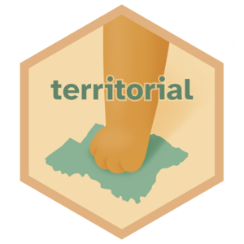

Trivia de comunas, provincias y regiones de Chile
Juego interactivo de R en tu navegador
Código:vignettes/articles/trivia.qmd
¿Cuánto sabes de los territorios de Chile? La función trivia() del paquete territorial inicia un juego de preguntas interactivo directo en tu consola de R, pero en esta página puedes probarlo en tu navegador!
Son 5 tipos de preguntas distintos, y las alternativas se crean al azar con respuestas que buscan engañarte. ¡A ver si logras sacar el puntaje máximo! 🤓
Cargando R en tu navegador (puede tardar unos segundos)...
La consola de R que ves arriba es interactiva. Se ejecuta trivia() automáticamente, para que empiece el cuestionario. Responde cada pregunta con el número de la alternativa y presiona enter.
R funciona en tu navegador gracias a webR.
Si tienes R instalado, también puedes jugar en tu consola:
install.packages("territorial", repos = "https://bastianolea.r-universe.dev")
territorial::trivia()